- Извекова Мария Петровна
- студентка 3 курса
- факультет Физико-математических и естественных наук
- Российский университет дружбы народов

Построить математическую модель для выбора правильной стратегии при решении примера задаче о погоне.
Между страной Х и страной У идет война. Численность состава войск исчисляется от начала войны, и являются временными функциями xt()и yt(). В начальный момент времени страна Х имеет армию численностью 25 000 человек, а в распоряжении страны У армия численностью в 39 000 человек. Для упрощения модели считаем, что коэффициенты a, b, c, h постоянны. Также считаем Pt() и Qt() непрерывные функции.
Постройте графики изменения численности войск армии Х и армии У для следующих случаев
Рассмотреть три случая ведения боевых действий: 1. Боевые действия между регулярными войсками 2. Боевые действия с участием регулярных войск и партизанских отрядов 3. Боевые действия между партизанскими отрядами
Формула для выбора варианта: (1132226460%70)+1 = 51
вариант.
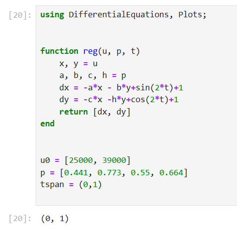
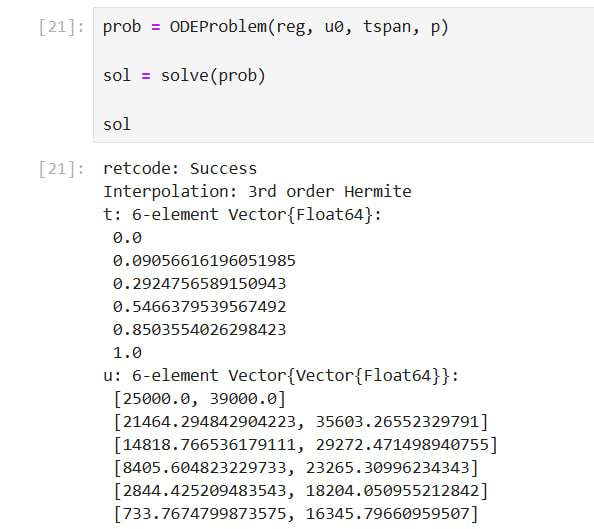
В результате получаем следующий график
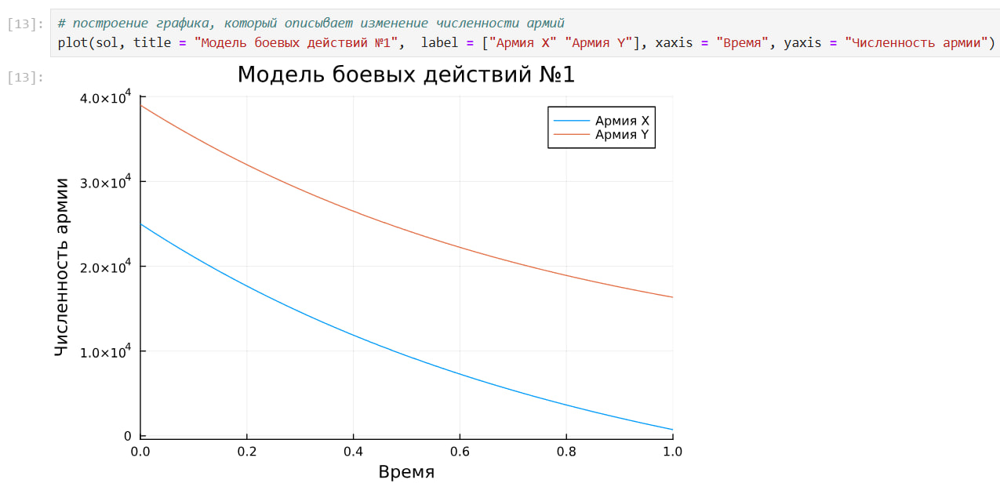
Теперь давайте построим эту же модель посредством OpenModelica.
model lab3
parameter Real a = 0.441;
parameter Real b = 0.773;
parameter Real c = 0.55;
parameter Real h = 0.664;
parameter Real x0 = 25000;
parameter Real y0 = 39000;
Real x(start=x0);
Real y(start=y0);
equation
der(x) = -a*x - b*y+sin(2*time)+1;
der(y) = -c*x -h*y+cos(2*time)+1;
end lab3;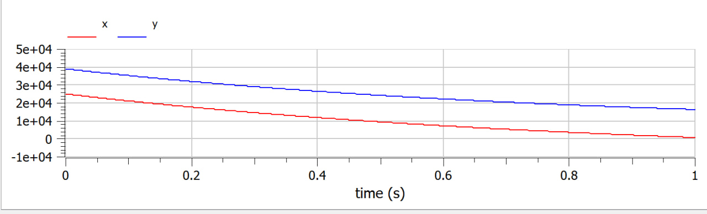
Построим модель на Julia:
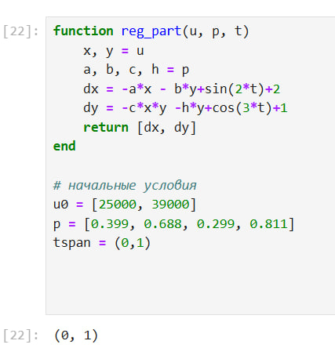
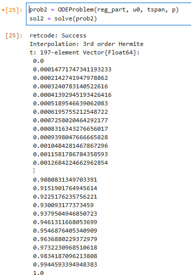
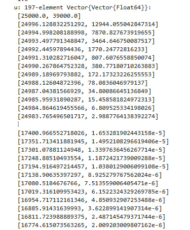
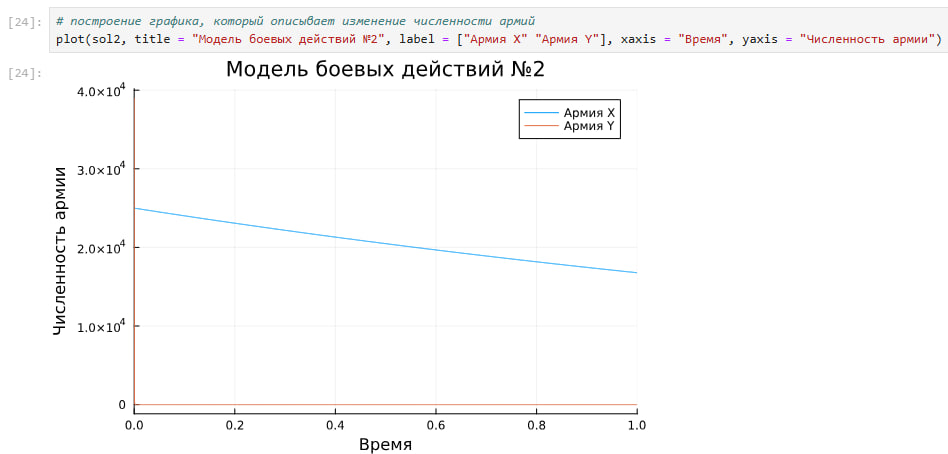
Уменьшаем масштаб, чтобы увидеть, где начинается уменьшение армии Y
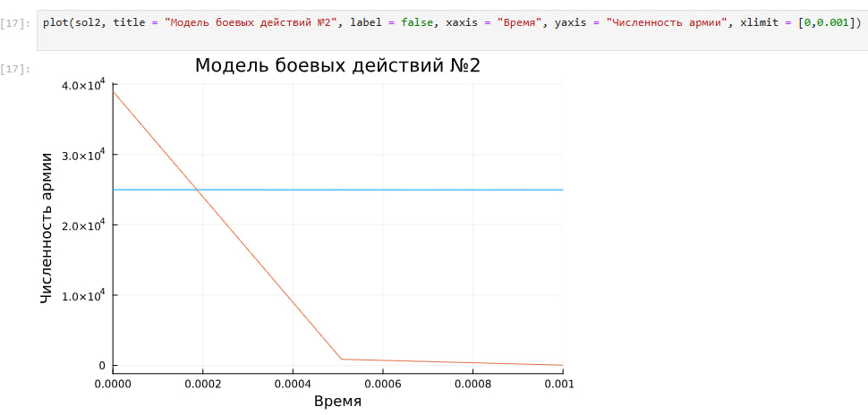
Теперь давайте построим эту же модель посредством OpenModelica.
model lab3_part
parameter Real a = 0.399;
parameter Real b = 0.688;
parameter Real c = 0.299;
parameter Real h = 0.811;
parameter Real x0 = 25000;
parameter Real y0 = 39000;
Real x(start=x0);
Real y(start=y0);
equation
der(x) = -a*x - b*y+sin(2*time)+2;
der(y) = -c*x*y -h*y+cos(3*time)+1;
end lab3_part;
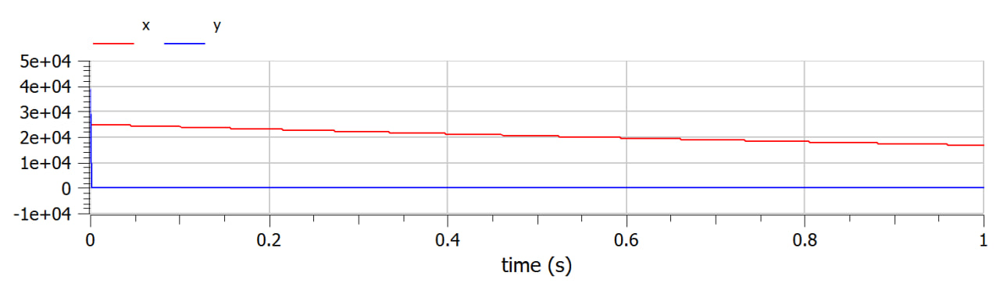
Уменьшаем масштаб, чтобы увидеть, где начинается уменьшение армии Y
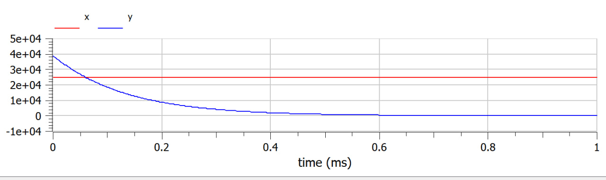
В процессе выполнения данной лабораторной работы я построила модель боевых действий на языке прогаммирования Julia и посредством ПО OpenModelica, а также провела сравнительный анализ.